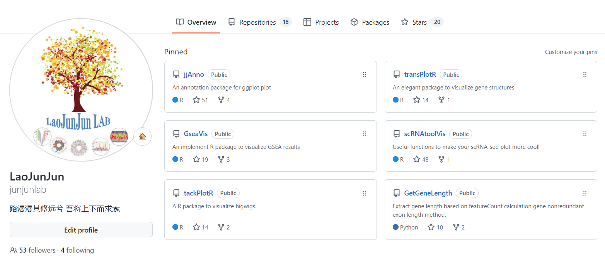
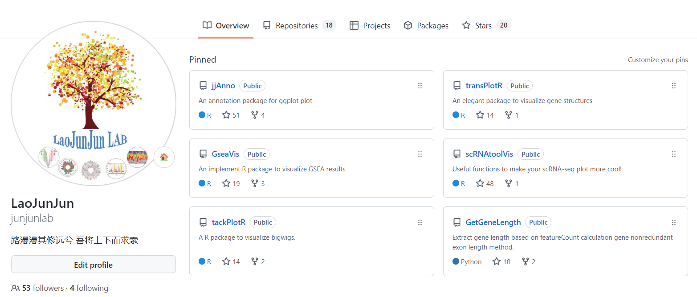

The documentation of jjPlot package
2022-08-24
Chapter 1 About Lao Junjun
If you are interested in my works, welcome to browse my github: https://github.com/junjunlab.

2022-08-24
If you are interested in my works, welcome to browse my github: https://github.com/junjunlab.
